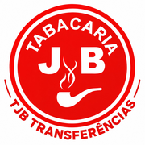

Transferências TJB
Coloque o ícone na tela do iPhone:
- Toque no botão Compartilhar (quadrado com seta para cima), embaixo da tela. Se não aparecer, toque nos três pontinhos (…) e depois em Compartilhar.
- Toque em "Adicionar à Tela de Início".
- Toque em "Adicionar", no canto de cima.
Depois é só tocar no ícone com o logo da TJB.
Abrir a ferramenta agora